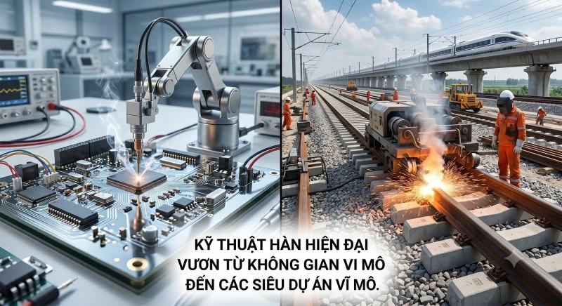
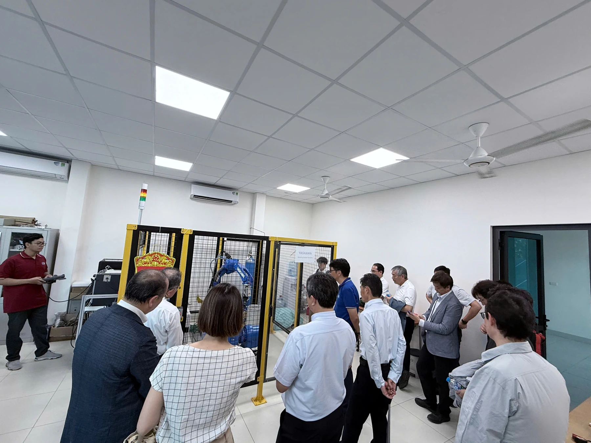

Bài viết gốc bằng tiếng Việt

Khi nhắc đến "Hàn", bạn hình dung ra điều gì? Những tia lửa chói lòa hay người thợ lấm lem trong các xưởng cơ khí truyền thống? Đã đến lúc phải thay đổi hoàn toàn góc nhìn đó!
Trong Kỷ nguyên Công nghiệp 4.0, Công nghệ & Kỹ thuật Hàn là một lĩnh vực công nghệ cao, tĩnh lặng nhưng đóng vai trò "xương sống" kiến tạo nên thế giới hiện đại. Từ những vi mạch điện tử siêu nhỏ nằm gọn trong lòng bàn tay đến các siêu dự án hạ tầng tỷ đô, Kỹ sư Hàn đang là những người làm chủ các công nghệ tối tân nhất.
NHỮNG "ĐIỂM HOT" ĐANG DẪN DẮT NGÀNH CÔNG NGHỆ HÀN
Micro-joining: Nghệ thuật hàn vi mạch bán dẫn
Việt Nam đang đứng trước cơ hội vàng để trở thành trung tâm sản xuất chip bán dẫn của thế giới. Trong sản xuất vi mạch, công nghệ ghép nối vi mô (Micro-joining) như hàn siêu âm, dán nối dây (wire bonding) bằng vàng/đồng với độ chính xác tính bằng micromet là khâu mang tính quyết định. Học Công nghệ Hàn hiện đại chính là bạn đang nắm trong tay tấm vé bước vào ngành công nghiệp tỷ đô này.
Công nghệ hàn từ vi mô (hàn vi mạch bán dẫn) đến vĩ mô (hàn đường ray tàu hỏa)
Hàn đường ray liền mạch cho Đường sắt cao tốc
Với định hướng phát triển hệ thống đường sắt tốc độ cao Bắc - Nam trong thời gian tới, nhu cầu về công nghệ hàn ray là vô cùng khổng lồ. Để những đoàn tàu chạy với vận tốc trên 300 km/h êm ái và an toàn, người ta không dùng đinh tán, mà phải ứng dụng các công nghệ như hàn tiếp xúc nóng chảy (Flash butt welding) hoặc hàn nhiệt nhôm để tạo ra những dải đường ray liền mạch kéo dài hàng chục kilomet.
In 3D Kim loại và Các công nghệ "xanh"
Kỹ sư Hàn ngày nay không chỉ ghép nối, mà còn "in" ra cả một chi tiết máy bay bằng công nghệ In 3D kim loại (WAAM) hay ứng dụng công nghệ Hàn ma sát khuấy (FSW) – một công nghệ hàn ở trạng thái rắn, không xỉ, không khói độc hại, đang được ứng dụng rộng rãi trong ngành hàng không vũ trụ và chế tạo ô tô điện.
Tích hợp Trí tuệ Nhân tạo (AI) và Robot hóa
Công việc của một Kỹ sư Hàn giờ đây là ngồi trước màn hình máy tính để lập trình quỹ đạo cho Robot hàn 6 bậc tự do, hoặc sử dụng Trí tuệ nhân tạo (AI) và thị giác máy tính (Machine Vision) để phân tích, tự động phát hiện các khuyết tật của mối hàn theo thời gian thực thay vì soi chiếu thủ công.
ĐIỂM MẠNH & CƠ HỘI VIỆC LÀM "VÀNG"
Nhóm chuyên môn Hàn & Công nghệ Kim loại (Đào tạo chuyên ngành Công nghệ & Tự động hóa hàn, thuộc Trường Cơ khí, Đại học Bách khoa Hà Nội) tự hào là lá cờ đầu trong việc đào tạo nguồn nhân lực chất lượng cao, mang đến cho sinh viên những lợi thế cạnh tranh tuyệt đối:
- Khan hiếm nhân sự trình độ cao: Ngành công nghiệp nặng, dầu khí, đóng tàu và hàng không luôn trong tình trạng "khát" Kỹ sư hàn quốc tế (IWE), Điều phối viên hàn Nhật bản (JWES WE). Mức lương cho một Kỹ sư hàn có chứng chỉ quốc tế luôn nằm trong top đầu của khối ngành kỹ thuật.
- Mạng lưới đối tác doanh nghiệp "khủng": Sinh viên có cơ hội thực chiến và tiếp cận các chuẩn mực công nghiệp khắt khe nhất ngay từ ghế nhà trường thông qua các dự án đào tạo, nghiên cứu hợp tác với các tập đoàn công nghệ lớn như Samsung, IHI Corporation,...
- Vươn tầm quốc tế: Cơ hội tu nghiệp tại các cường quốc cơ khí. Điển hình như chương trình Dojo hợp tác với Đại học Osaka (Nhật Bản) đài thọ sinh viên sang nghiên cứu tại các phòng Lab siêu hiện đại, hay chương trình hợp tác với công ty TOA (đào tạo tiếng Nhật miễn phí, thực tập hưởng lương và bảo lãnh làm việc tại Nhật Bản sau khi ra trường).

Sinh viên chuyên ngành Công nghệ & Tự động hóa hàn demo vận hành Robot hàn tại Trung tâm Nghiên cứu Công nghệ hàn & Ghép nối JWRI HUST-UOsaka
LỜI KẾT
Nếu bạn là một người đam mê công nghệ, thích sự chính xác và mong muốn có một sự nghiệp vững chắc với mức thu nhập hấp dẫn không giới hạn biên giới quốc gia, chuyên ngành Công nghệ & Tự động hóa hàn chính là sự lựa chọn hoàn hảo.
Đừng chọn ngành theo định kiến của ngày hôm qua. Hãy chọn ngành đang kiến tạo tương lai!
NHÓM CHUYÊN MÔN HÀN & CÔNG NGHỆ KIM LOẠI
Khoa Cơ khí Chế tạo máy, Trường Cơ khí - Đại học Bách khoa Hà Nội
Địa chỉ: Phòng 511M, nhà C7
Liên hệ: PGS. TS. Bùi Văn Hạnh (Trưởng Nhóm chuyên môn): 0913.507.234/ hanh.buivan@hust.edu.vn
Khởi nguồn của những Kỹ sư và Chuyên gia toàn cầu.